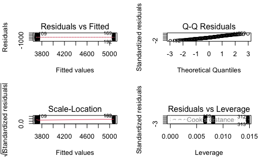
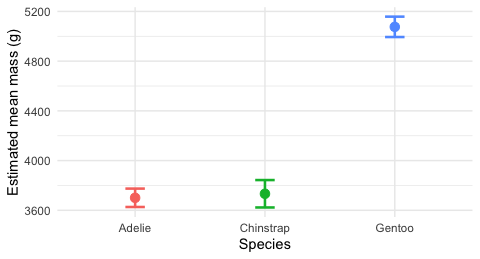

# Load packages at the top — always -------------------
library(tidyverse) # wrangling + ggplot2
library(palmerpenguins) # the penguins data
library(car) # leveneTest(), Anova()
library(emmeans) # pairwise follow-up testsLecture 20 — One-Way ANOVA II: Assumptions, then Follow-Up Tests
Earning the p-value, and finding out which species actually differ
anova
tidyverse
statistics
Set 2 — checking the one-way ANOVA’s assumptions on the penguin model with plot(model), a residual QQ plot, Shapiro-Wilk and Levene’s test, and what to do when equal variance fails (Welch’s ANOVA). Set 3 — the follow-up tests: emmeans pairwise comparisons, Tukey adjustment, a compact letter display, a means plot, and the finished results sentence.
Where we left off — Lecture 19
- Plotted body mass by species; Gentoo high, Adelie and Chinstrap nearly level
mass_model <- lm(body_mass_g ~ species, data = penguins_df)Anova(mass_model)→ F(2, 339) = 343.6, p < 0.001- Reported: “Body mass differed significantly among the three species.”
Important
We skipped a step on purpose.
We read that p-value without checking whether the model was allowed to give it to us, and we never found out which species differ. Those are today’s two sets.
Goals for today
Set 2 — the assumptions
- Normality of the residuals —
plot(model), QQ, Shapiro-Wilk - Equal variance — Levene’s test
- What to do when one fails → Welch’s ANOVA
Set 3 — the follow-up tests
- Which groups differ —
emmeanspairwise, Tukey-adjusted - Read a compact letter display
- Plot the estimated means ± CI
- Write the finished results sentence
Tools today:
car—leveneTest(),Anova()emmeans,multcomp— pairwise tests, letters
Textbook:
- 📖 W&S Ch. 15 — ANOVA
- 📖 emmeans vignettes
Naming: models → _model, plots → _plot
Set Up Again — Same Four Lines
# The same data and model as Lecture 19 ---------------
penguins_df <- penguins %>%
drop_na(body_mass_g, species)
mass_model <- lm(body_mass_g ~ species, data = penguins_df)Every script starts from the raw data. Nothing today depends on objects left over in last lecture’s session.
Tip
library(palmerpenguins) again — base R has its own penguins with body_mass instead of body_mass_g.
🧩 Set 2 · The Assumptions
What a one-way ANOVA assumes:
- Independent observations — a design question, not a test
- The residuals are normally distributed
- The groups have equal variance (homoscedasticity)
Note
Assumption 1 is about how the data were collected — no R function can rescue it. 2 and 3 we can look at directly, and that is what the next few slides do.
Normality Is About the Residuals
A residual is one bird’s miss: its mass minus its species’ mean.
\[\text{residual} = y_i - \bar{y}_{\text{group}}\]
ANOVA does not require the raw masses to be normal — pooled across three species with different means they are not even supposed to be. It requires the misses to be normal.
# What the residuals look like ------------------------
head(residuals(mass_model), 4) 1 2 3 4
49.33775 99.33775 -450.66225 -250.66225
Important
Shapiro on the raw body_mass_g is a different, wrong test. Always residuals(model).
Assumption 2 — plot(model), the Same Four Panels
par(mfrow = c(2, 2))
plot(mass_model)
par(mfrow = c(1, 1))
Note
🔮 Predict first: with ~340 penguins, will the Q-Q panel track the line?
- Three vertical stripes in panels 1 and 3 — a categorical X has only three fitted values. Normal, not a problem
- Panel 2 (Normal Q-Q) is the normality check
- Panels 1 & 3 show whether the stripe heights match — assumption 3 by eye
Normality — Shapiro-Wilk as the Backup
# Shapiro-Wilk on the RESIDUALS -----------------------
shapiro.test(residuals(mass_model))
Shapiro-Wilk normality test
data: residuals(mass_model)
W = 0.99166, p-value = 0.05118W = 0.992, p = 0.051 — just above 0.05.
- H₀: the residuals are normal
- p > 0.05 → no evidence against normality
Important
Large-sample caution
With ~340 birds Shapiro-Wilk flags tiny departures. A p of 0.051 is not “barely passed” — it is “the test is so sensitive at this n that it is nearly flagging a QQ plot that looks fine.” Trust the plot, use the test as a second opinion.
Assumption 3 — Equal Variance by Eye First
# The spread of each group ----------------------------
penguins_df %>%
group_by(species) %>%
summarize(n = n(),
mean = mean(body_mass_g),
sd = sd(body_mass_g))# A tibble: 3 × 4
species n mean sd
<fct> <int> <dbl> <dbl>
1 Adelie 151 3701. 459.
2 Chinstrap 68 3733. 384.
3 Gentoo 123 5076. 504.- Adelie 459, Chinstrap 384, Gentoo 504
- The biggest sd is about 1.3× the smallest
- Combined with unbalanced n (151 / 68 / 123), that is the situation where unequal variance actually matters
Note
Rule of thumb: equal n makes ANOVA forgiving about unequal variance. Unequal n does not.
Equal Variance — Levene’s Test
Note
🔮 Predict first: given those sds, will Levene’s test call the variances equal (p > 0.05) or unequal?
# H0: all groups have equal variance ------------------
leveneTest(body_mass_g ~ species, data = penguins_df)Levene's Test for Homogeneity of Variance (center = median)
Df F value Pr(>F)
group 2 5.1203 0.006445 **
339
---
Signif. codes: 0 '***' 0.001 '**' 0.01 '*' 0.05 '.' 0.1 ' ' 1F = 5.12, p = 0.0064
p < 0.05 → reject H₀ → the variances are not equal.
Important
So the classic ANOVA we ran last lecture has a violated assumption. This is not a mistake in the slides — it is what this data set does. Real data does this constantly.
When Equal Variance Fails — Welch’s ANOVA
# Does not assume equal variances ---------------------
oneway.test(body_mass_g ~ species,
data = penguins_df,
var.equal = FALSE)
One-way analysis of means (not assuming equal variances)
data: body_mass_g and species
F = 317.57, num df = 2.00, denom df = 189.48, p-value <
2.2e-16- F = 317.6, num df 2, denom df 189.5, p < 0.001
- Fractional denominator df is Welch’s signature — it is the same correction as Welch’s t-test, which is R’s default
t.test()
Note
✅ The decision
Levene says unequal → report the Welch F. The conclusion does not change (both p are far below 0.001) but the honest test is the Welch one.
A Decision Table You Can Keep
| Check | Result here | What it means | What to run |
|---|---|---|---|
| QQ + Shapiro | p = 0.051, plot fine | residuals ~normal | fine either way |
| Levene | p = 0.0064 | variances unequal | oneway.test(var.equal = FALSE) |
| Both fail badly | — | normality and variance gone | Kruskal-Wallis (rank-based) |
Tip
For reference only — you do not run this today. The rank-based backup is kruskal.test(body_mass_g ~ species, data = penguins_df) → χ² = 217.6, df = 2, p < 0.001. Same answer again. When three different tests agree, you can stop worrying about which one you picked.
What Would Change the Answer?
Here all three tests say p < 0.001, so the violated assumption cost us nothing.
That is not a reason to skip the check. Unequal variance with unequal n can push a p-value across 0.05 in either direction — you only know which case you are in after you look.
Important
The rule for this course
Check → decide → test → report the test you decided on. Not “run everything and report the smallest p.”
🧩 Set 3 · Follow-Up Tests — Which Groups Differ?
The F-test said “at least one species differs.” Look back at the boxplot:
- Gentoo is obviously above the others
- Adelie and Chinstrap sit almost on top of each other
A single p < 0.001 is perfectly consistent with Gentoo differs, the other two do not. The F-test cannot tell those stories apart.
Note
✅ Key idea
A significant F licenses you to go looking. It does not tell you what you will find.
Why Not Just Run the Three t-Tests Now?
Because that is the problem we opened Lecture 19 with — three tests at α = 0.05 gives ~14% chance of a false positive.
A post-hoc (after-the-fact) test does the three comparisons and adjusts the p-values so the family-wise error rate stays at 0.05.
The standard adjustment for all-pairs comparisons is Tukey’s HSD.
Important
“Tukey-adjusted” means the p-values printed have already been corrected. You compare them with 0.05 directly — you do not divide anything.
Pairwise Comparisons with emmeans
Note
🔮 Predict first: will all three species differ from each other, or will two be statistically tied?
# Estimated means + every pairwise comparison ---------
mass_emm <- emmeans(mass_model, pairwise ~ species)
mass_emm$contrasts contrast estimate SE df t.ratio p.value
Adelie - Chinstrap -32.4 67.5 339 -0.480 0.8807
Adelie - Gentoo -1375.4 56.1 339 -24.495 <0.0001
Chinstrap - Gentoo -1342.9 69.9 339 -19.224 <0.0001
P value adjustment: tukey method for comparing a family of 3 estimates The answer:
- Adelie – Chinstrap: 32 g, p = 0.88 → not different
- Adelie – Gentoo: −1375 g, p < 0.0001
- Chinstrap – Gentoo: −1343 g, p < 0.0001
Important
Two of the three species are statistically indistinguishable in mass. “Significant ANOVA” never meant “everything differs.”
What emmeans Gives You
# The group means, with CIs ---------------------------
mass_emm$emmeans species emmean SE df lower.CL upper.CL
Adelie 3701 37.6 339 3627 3775
Chinstrap 3733 56.1 339 3623 3843
Gentoo 5076 41.7 339 4994 5158
Confidence level used: 0.95 emmean— the model’s estimate of each group meanSE,df, and a 95% confidence intervalemmeans(model, pairwise ~ species)returns a list of two things:$emmeans(the means) and$contrasts(the comparisons)
Tip
emmeans(model, ~ species) with no pairwise gives just the means.
The Backup That Matches Welch
Tukey through emmeans uses the model’s pooled error — the thing Levene told us to be careful about. The matching unequal-variance version:
# Non-pooled SD, Holm-adjusted ------------------------
pairwise.t.test(penguins_df$body_mass_g,
penguins_df$species,
pool.sd = FALSE)
Pairwise comparisons using t tests with non-pooled SD
data: penguins_df$body_mass_g and penguins_df$species
Adelie Chinstrap
Chinstrap 0.59 -
Gentoo <2e-16 <2e-16
P value adjustment method: holm - Adelie vs Chinstrap: p = 0.59 → still not different
- Everything else: p < 2e-16
Note
✅ Same story. The letters stand. When the robust version agrees with the standard one, report the standard one and say you checked.
Plot the Result — Means ± CI
mass_emm_plot <- as.data.frame(mass_emm$emmeans) %>%
ggplot(aes(x = species, y = emmean, color = species)) +
geom_point(size = 3) +
geom_errorbar(
aes(ymin = lower.CL, ymax = upper.CL),
width = 0.15, linewidth = 0.9
) +
labs(x = "Species", y = "Estimated mean mass (g)") +
theme_minimal() +
theme(legend.position = "none")
mass_emm_plot
- Adelie and Chinstrap intervals overlap — consistent with p = 0.88
- Gentoo’s interval is nowhere near the other two
Important
Overlapping CIs are a hint, not a test. The p-value is the test; the plot is how your reader sees it.
This is the ANOVA cousin of the mean ± SE plot from the summary-stats lecture.
How to Report the Whole Thing
“Body mass differed among the three penguin species. Variances were unequal (Levene’s test: F(2, 339) = 5.12, p = 0.006), so we report Welch’s ANOVA: F(2, 189.5) = 317.6, p < 0.001. Tukey-adjusted pairwise comparisons showed that Gentoo penguins (5076 ± 42 g) were heavier than both Adelie (3701 ± 38 g, p < 0.001) and Chinstrap (3733 ± 56 g, p < 0.001), while Adelie and Chinstrap did not differ (p = 0.88).”
Every piece earns its place:
- the assumption you checked, and what you did about it
- the test, F, both df, p
- the follow-up, named as adjusted
- the means ± SE, so a reader can see the size of the effect
- the pair that did not differ — reporting that is not a failure, it is the finding
🛑 Now Go Run It
Open scripts/20_anova_2_skeleton.R. Part A is pre-filled — run it chunk by chunk and answer the QA boxes. Part B is the homework: Sets 2 and 3 again on a different measurement — flipper_length_mm, bill_length_mm or bill_depth_mm — and you write that code yourself.
Tip
Your Part B numbers will not match your neighbour’s. One of the three columns passes Levene’s test cleanly, one gives three different letters, and one puts Gentoo at the bottom. Do not assume it will look like body mass.
What We Learned Today
Concepts:
- Normality is about the residuals, not the raw data
- Unequal variance + unequal n is the case that actually matters → Welch’s ANOVA
- A significant F licenses a follow-up; it does not name the groups
- Tukey adjustment keeps family-wise error at 0.05
- A shared letter means not shown to be different — not proven the same
R skills:
plot(model),shapiro.test(residuals(model))leveneTest(),oneway.test(var.equal = FALSE)kruskal.test()— know it exists; we do not run it todayemmeans(model, pairwise ~ group),multcomp::cld()pairwise.t.test(pool.sd = FALSE)
References:
- 📖 W&S Ch. 15 — ANOVA
- 📖 emmeans vignettes
Up next — Lecture 21:
- The final project
- You now have the full toolkit: wrangle → plot → check → test → follow up → report. The project is you doing that on data you chose.